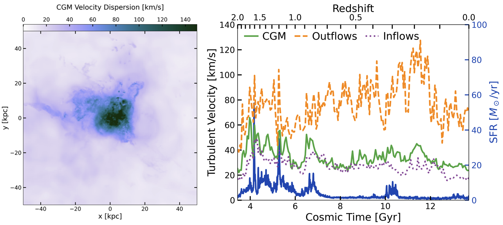
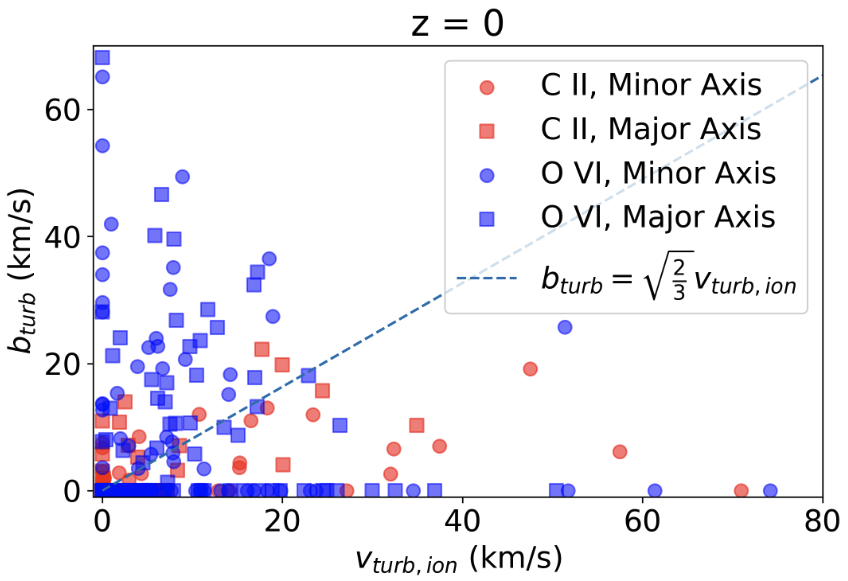
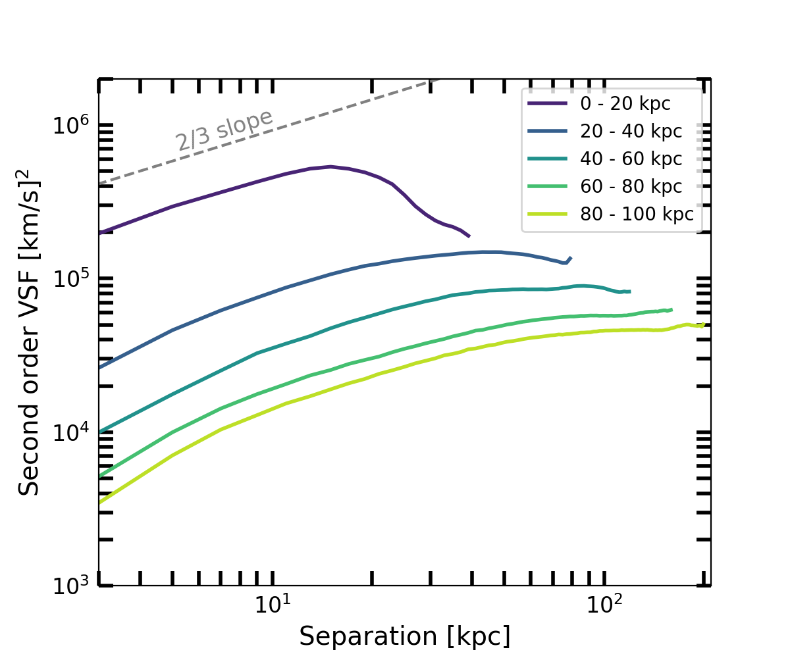

Mock Observations of CGM Turbulence
How do absorption and emission observations trace turbulence?
Observations of the circumgalactic medium in both absorption and emission have found suggestions of nonthermal gas motions. In absorption, this manifests as non-thermal broadening of absorption lines. In emission maps, this manifests as variations in line-of-sight velocity across different locations in a galaxy's CGM that do not appear to be tracing large-scale motions like rotation. Disordered motions in the CGM (i.e., not part of bulk inflows or outflows or rotation) could be tracing turbulence.
Using the FOGGIE simulations, I have been finding that the strength of CGM turbulence may be related to the strength of stellar feedback, especially in the hot gas that directly tracks the outflows launched by feedback. In addition, turbulence is stronger closer to the galaxy (see my previous papers on how turbulence affects the CGM). But how can we infer the strength and properties of turbulence from CGM observations to compare to simulations?
I recently worked with Naija Bruckner, a senior at Rice University, on a project to investigate how well non-thermal broadening of absorption lines matches the full 3D turbulence dynamics. Naija used synthetic absorption lines created by shooting rays through the FOGGIE simulations to determine the non-thermal broadening, and compared this "measured" turbulence to the "true" 3D turbulence in the simulated CGM. We found that while the broadening of absorption lines matched the 1D velocity dispersion along the line of sight fairly well (as expected), they did not correlate well at all with the full 3D turbulence measurements. This means that absorbers or specific ions (we examined C II and O VI) are disconnected from the larger turbulent flows, the 1D skewer does not capture enough information about the broader turbulence, or both. We are now examining if the spread of velocities among absorption components, instead of the individual absorbers' turbulent broadening, might better capture the CGM turbulence.
I've also been working with Helena Bouchereau, a senior at Northeastern University, to probe the properties of turbulence with emission maps. Helena created emission-weighted velocity maps from the FOGGIE simulations and then computed velocity structure functions (VSFs) from the velocity maps. A VSF is computed as the difference in velocities between pairs of points, as a function of distance between the points in the pair. By analyzing the slope and the location of a turn-over or flattening of the VSF, we can determine the type of turbulence and the characteristic scale at which the turbulence is being driven. We've found that mock emission-weighted VSFs are quite similar to "true" VSFs computed from the full 3D information in the simulation, except that the location of the turnover, from which we infer the driving scale, tends to be smaller in the mock observations than in the full simulation. This is because the emission-weighted VSF is biased in two ways: first, emission picks out the densest gas, so it will be weighted towards the turbulence of the dense gas; and second, the measurement of the driving scale is limited to where emission is strong enough to be detected. If the emission region isn't large enough to capture the true driving scale of the turbulence, then a smaller, incorrect driving scale will be inferred. We also discovered that in FOGGIE, turbulence is stronger, with a smaller driving scale, close to the galaxy while it is weaker, with a larger driving scale, further away.
These studies show that CGM turbulence properties can be determined from observations, but there are some important biases to take into account!